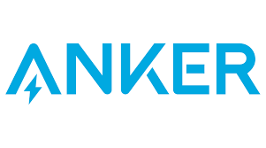

About
Experience
M.S. Student & Researcher @ Tongji University
Embodied AI and AI4Science research.
Working on humanoid / legged robot learning, reinforcement learning, motion retargeting, and
physics-informed modeling for PEM electrochemical systems.
Supervisors: Xuezhe Wei, Jiangong Zhu, Xiaoping Wu
Supervisors: Xuezhe Wei, Jiangong Zhu, Xiaoping Wu
2025.09 – 2026.01
Robotics Locomotion & Manipulation Algorithm Intern @ AgiBot, Shenzhen, China
Project: Whole-body Loco-manipulation (Sim2Real)
• Dynamics-constrained motion generation via Crocoddyl + Pinocchio.
• VR teleoperation whole-body controller with Sim2Sim / Sim2Real validation.
• AIMRT–ROS SDK debugging for full-stack integration.
Instructor: Shaohe Du
• VR teleoperation whole-body controller with Sim2Sim / Sim2Real validation.
• AIMRT–ROS SDK debugging for full-stack integration.
Instructor: Shaohe Du
2025.04 – 2025.09
Embodied Locomotion Control Algorithm Intern @ Xiaomi Robotics, Beijing, China
Project: Biped Locomotion with Toe Modeling
• Studied toe DoF effects on biped gait stability via Cassie-style simulation.
• Built mocap retargeting pipeline; trained PPO + AMP policies in Isaac Gym / Legged Gym.
• Tuned rewards, contact forces, and PPO hyperparameters for locomotion stability.
Instructor: Jianhua Feng
• Built mocap retargeting pipeline; trained PPO + AMP policies in Isaac Gym / Legged Gym.
• Tuned rewards, contact forces, and PPO hyperparameters for locomotion stability.
Instructor: Jianhua Feng

2025.01 – 2025.03
Embodied Perception Algorithm Intern @ Anker Innovations, Shanghai, China
Project: 3D Simulation Asset Generation & Multi-engine Survey
• Surveyed multi-engine sim platforms (Isaac Sim, MuJoCo, Gazebo, Unity) and 3D/4D Gaussian Splatting.
• Built end-to-end 3DGS reconstruction pipeline and ROS2 control interfaces in Isaac Sim.
Instructor: Minyi Chen
• Built end-to-end 3DGS reconstruction pipeline and ROS2 control interfaces in Isaac Sim.
Instructor: Minyi Chen
2024.03 – 2024.10
ADAS Functional Test & Automation Intern @ NIO, Shanghai, China
Deployed WorldSim-based automated ADAS testing; designed AEB / BSD / ACC / ALC scenario cases and execution scripts.
Instructor: Xinghai Huang
Instructor: Xinghai Huang
2023.04 – 2023.08
Data Communication Intern @ Porsche Engineering, Shanghai, China
Built CARLA + ROS co-simulation stack with FCW / SCW scenarios and multi-node middleware visualization pipeline.
Instructor: Mojun Qian
Instructor: Mojun Qian
B.Eng. Student @ Tongji University
Major in Vehicle Engineering, with early research experience in hydrogen energy and fuel cell systems.
Supervisor: Haifeng Dai
Supervisor: Haifeng Dai
Publications ( / )


Discover Applied Sciences/SN Applied Sciences, 2025
Selected Honors & Awards
- Second Prize, 2024 New Energy Vehicle Battery AI Fault Prediction Competition (University Group)
- National First Prize, Formula Student Electric China (“NIO Cup”)
- Third Prize, Tongji University Physics Competition